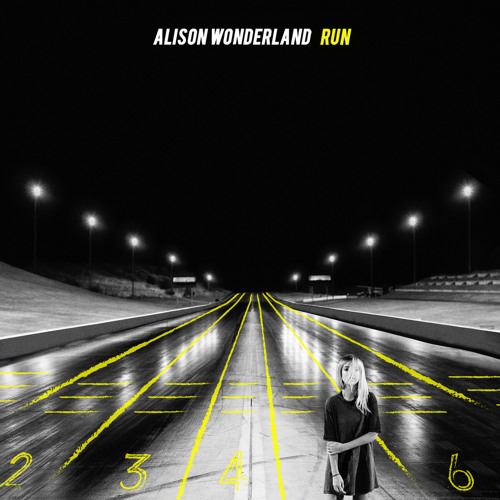

Alison Wonderland
Alex Sholler, better known by her stage name Alison Wonderland, is a Sydney-based DJ and producer signed to EMI Music Australia, which is part of Universal Music Australia. She initially trained as a classical musician, and is a trained cellist. In 2014 she embarked on a national tour playing in warehouses across Australia. Wonderland's debut album, Run, was released on 20 March 2015.
After signing with EMI music Australia, Alison Wonderland gained popularity after her debut single "Get Ready," which features Sydney duo Fishing, was released on January 1, 2013. Soon after on June 27, 2014, her debut EP "Calm Down" was released and peaked at 38 on the ARIA chart, which preceded with singles "I Want U" and "Cold". "I Want U" peaked at 38 on the ARIA Charts as well as topping the Hype Machine charts, and subsequently became her biggest hit until her single "Run." The Extended Play was praised by Major Lazer member Diplo and Annie Mac.
Alison Wonderland was nominated for two ARIA awards in 2015, Best Dance Release (for the single "Run") and Best Video (for "U Don't Know" featuring Wayne Coyne). The latter was in a category that was publicly voted upon. She was one of eight nominees to gain exactly two nominations. Other nominees included The Veronicas, 5 Seconds Of Summer, the Australian Brandenburg Orchestra, Meg Mac, and Peking Duk.